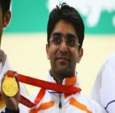

1) Rohit Sharma
He won the ICC Men's ODI Cricketer of the Year award in 2019 after he scored five centuries in the 2019 World Cup.
Rohit Sharma currently holds the world record for the highest individual score (264) in a one-day international match and is the only player to have scored three double-centuries in one-day internationals.
2) Abhinav Bindra
He is the first Indian to have held concurrently the world and Olympic titles for the men's 10-meter air rifle event.
He earned accolades at almost every international meet he participated in. The Indian shooter was unstoppable in particularly the Commonwealth Games. He won a gold
medal in the 10-meter air rifle pairs event at the 2002 Manchester, 2006 Melbourne and 2010 Delhi Commonwealth Games.

3) Sunil Chhetri
Chhetri is the second joint-highest international goal scorer, along with Lionel Messi, among the active players, behind only to Cristiano Ronaldo,[5][6] and fifth-highest of all time.
He is both the most-capped player and the all-time top goal scorer for India.
4) Neeraj Chopra
He is the Current World Junior Record Holder (86.48m - 2016)
Neeraj Chopra is the reigning Olympic champion in javelin throw.
5) Vishwanath Anand
In April 2006, Anand became the fourth player in history to pass the 2800 Elo mark on the FIDE rating list, after Kramnik, Topalov, and Garry Kasparov. He occupied the number one position for 21 months, the sixth-longest period on record.
Anand was the first recipient of the Rajiv Gandhi Khel Ratna Award in 1991-92, India's highest sporting honor.